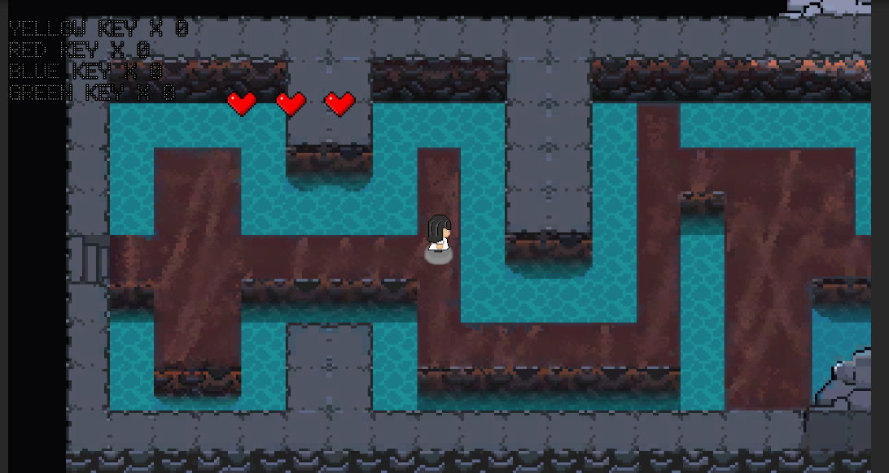
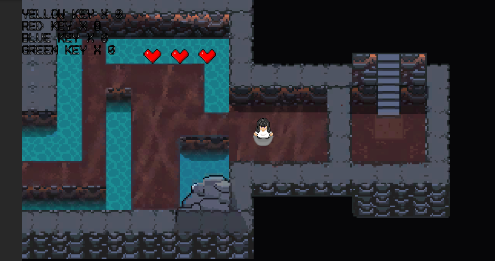
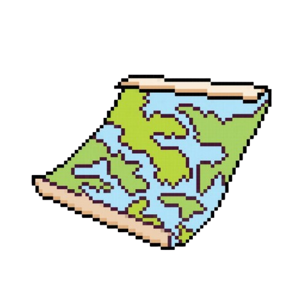
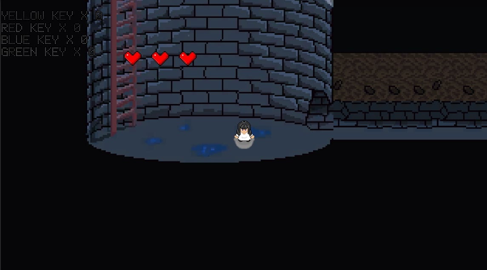
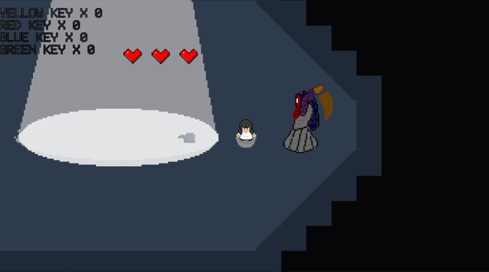
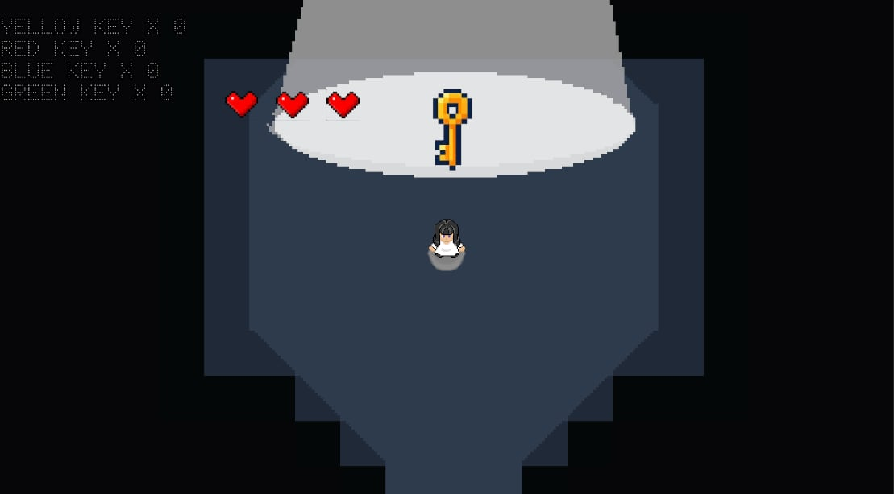
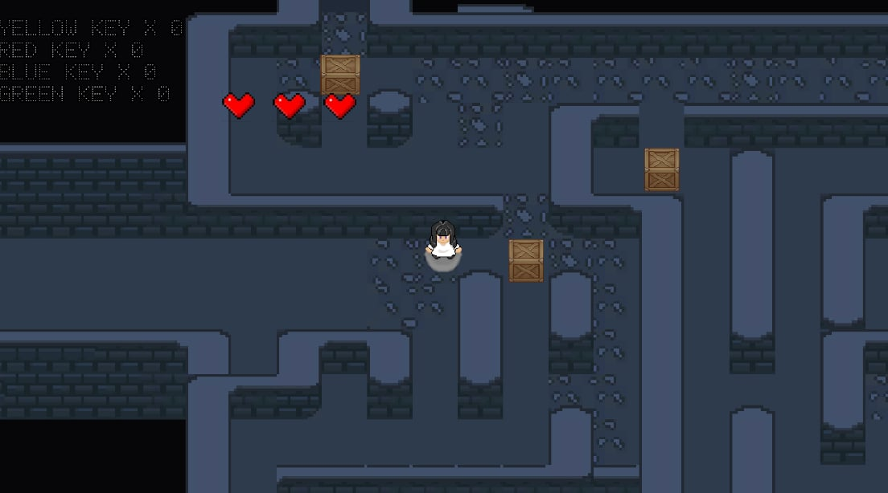
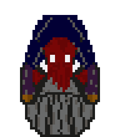
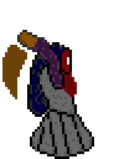
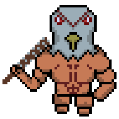

PUZZLE SOLVING
Solve environmental obstacles, uncover hidden mechanisms, and use key items to unlock new routes. Every puzzle encourages observation, timing, and careful thinking as you progress deeper into the mansion.
Traverse through dungeon-like environments filled with maze-like paths and obstacles. Explore interconnected areas, solve environmental challenges, and uncover hidden routes to progress. From a top-down perspective, you control Clare as she searches for key items to unlock doors and access new areas. Carefully manage your movement, avoid threats, and use your surroundings strategically to survive the dangers lurking within the mansion.

Traverse through dungeon-like ground floors, pass through run-down mazes, and push obstacles to open paths and move forward. Each area encourages exploration while testing the player's awareness of the environment.

With the top-down perspective, you play as Clare, searching the grounds for key items that unlock doors and hidden passages. Time your movements, dodge obstacles, use the environment to your advantage, and hide or run from enemies while conserving your life to survive.
.png)
Hearts represent the player's health and survival. As Clare explores the mansion and encounters dangerous creatures, managing health becomes crucial to staying alive. Losing all hearts means failure, making every movement and decision important.
Keys are essential items used to unlock doors and access new areas within the mansion. Each key corresponds to specific paths, encouraging exploration and backtracking as the player uncovers hidden routes and secrets.
Solve environmental obstacles, uncover hidden mechanisms, and use key items to unlock new routes. Every puzzle encourages observation, timing, and careful thinking as you progress deeper into the mansion.
Avoid hostile threats, manage your health, and move carefully through dangerous spaces. Survival depends on awareness, quick decisions, and knowing when to hide, escape, or push forward.

Search interconnected areas, discover hidden clues, and reveal the layout of the estate. Backtracking and curiosity are rewarded as new keys and discoveries open paths that were once unreachable.
Experience tension through darkness, silence, mystery, and the constant feeling of being watched. The mansion's unsettling environment creates fear not only through enemies, but through its haunting presence itself.

Search eerie rooms, hidden hallways, and locked spaces as you uncover the secrets of the mansion.

Avoid danger, protect your health, and make careful decisions to stay alive in hostile areas.

Collect important items and keys that unlock new paths, puzzles, and deeper parts of the estate.

Piece together the mystery behind Clare, the mansion, and the terrifying experiment hidden within.
The game begins with a woman trapped inside a human-sized glass tube. She breaks free by punching the glass, leaving her hand bleeding as blood spills across the floor. Strange barking sounds echo nearby while she searches for something to heal herself.
The room appears to be a laboratory, lined with many glass tubes similar to the one she escaped from. Inside them are figures that look disturbingly human — and some seem almost identical to her. As the strange sounds grow louder, she leaves the laboratory and finds herself inside a large, castle-like mansion.
As she explores, she discovers portraits of unfamiliar people and pieces of history displayed across the walls. Eventually, she learns that her name may be Ada. Mystery, danger, pursuit, and hidden secrets now surround her. What is her true role? What does the mansion hide? And will she ever escape?
Clare is the lone heroine of THE CLONE. She awakens trapped inside a human-sized glass tube within an unknown laboratory, her body wounded and her memories fragmented. With no clear understanding of who or what she truly is, Clare is forced to navigate a dark, mansion-like structure filled with disturbing creatures and hidden truths.
Nathan is the sinister force behind the mansion of THE CLONE. Once a man of science, his obsession with creating the perfect being twisted him into something inhuman. Now, he stalks the halls as Clare's greatest enemy, determined to reclaim her as part of his dark experiment.


Jarvis is a mysterious figure within THE CLONE. Unlike Clare, his motives are unclear, sometimes appearing as an ally, other times as an obstacle. His presence in the mansion raises questions about loyalty, survival, and the hidden truths that bind the clones together.

Cloned is a 2D top-down horror puzzle adventure game where players explore a mysterious mansion filled with secrets, dangers, and strange creatures.
Discover the truth behind your identity as Clare and survive the horrors within.
READ MORE2D Top-Down Horror Puzzle Adventure
PC (Windows)
Unity Engine
In Development (Student Project)
Darkon 5